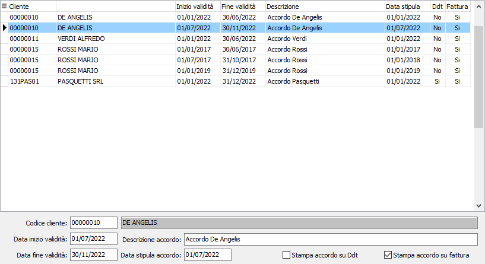

Accordi quadro clienti agroalimentari
La tabella "Accordi quadro clienti agroalimentari" consente di inserire i dati relativi agli accordi quadro previsti dal Dlgs 198/2021; l’accesso alla manutenzione sarà consentito solo se è attivo sulla configurazione “Configurazione funzionalità generali” il parametro “Cessione prodotti agricoli e alimentari”; gli accordi vengono inseriti per cliente e periodo di validità.

Sono previsti una serie di controlli al momento dell'inserimento/variazione degli accordi: il cliente deve avere codice ISO uguale ad IT, la data inizio validità accordo deve essere maggiore della data di fine validità più recente per il cliente, inoltre non devono essere presenti fatture relative a cessioni agro alimentari inviate allo SDI in data successiva sempre per il cliente; la data fine validità accordo è modificabile solo se la data inizio validità è la più recente per il cliente. Le caselle di spunta servono ad indicare su quale documento riportare la dicitura prevista tramite il relativo testo stampa (codice 51); i campi presenti possono essere inseriti nel testo di stampa utilizzando il formalismo [nome_campo] e quelli disponibili sono: [Descrizione], [DataAccordo], [DataIniVal] e [DataFineVal].
Per la tabella è disponibile anche la stampa.